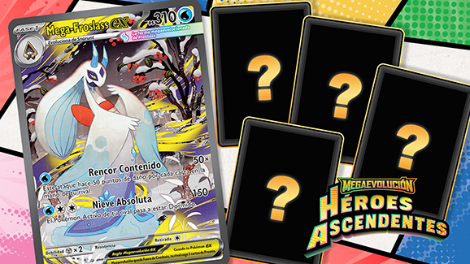

16 de enero de 2026
Juego de Cartas Coleccionables
Descubre nuevas y alucinantes cartas de Megaevolución–Héroes Ascendentes de JCC Pokémon
La nueva expansión del JCC Pokémon trae ilustraciones de otra dimensión con cartas de Megaevolución que prometen cambiar el meta competitivo. Conocé todos los detalles de las nuevas cartas especiales.